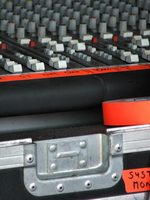
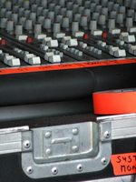

Next Photo
-
Vote
Colorful Porta Potties
These porta potties were found at Cornerstone Music Festival in Illinois 2006. They actually didnt smell too horribly at the time, and weren't dusty from the roads yet. The color is brought out thanks to the sun and lack of dust. Cornerstone porta-potties are definitely the most colorful I have seen. They were lined up and gave many campers relief that week. These particular bathrooms were behind merch tent 3, and had not been covered in band posters. Because they were lined up, the leaning one adds a bit of interest to the picture, the lines add some movement, and all together liven up the photo.
More...
Title: Colorful Porta Potties
Description: These porta potties were found at Cornerstone Music Festival in Illinois 2006. They actually didnt smell too horribly at the time, and weren't dusty from the roads yet. The color is brought out thanks to the sun and lack of dust. Cornerstone porta-potties are definitely the most colorful I have seen. They were lined up and gave many campers relief that week. These particular bathrooms were behind merch tent 3, and had not been covered in band posters. Because they were lined up, the leaning one adds a bit of interest to the picture, the lines add some movement, and all together liven up the photo.
Keywords: porta potties potty color colour cornerstone
Hidden: n
Date added: Sat Sep 02 23:01:51 CDT 2006
Date taken: Thu Jul 06 11:19:30 CDT 2006
Camera: FUJIFILM.FinePix S5100 .
Resolution: 2272x1704
Mode: 0
Shutter speed: 917/100
Flash: 16
Exposure time: 10/5500
Iso: 100
Metering: 5
Aperture: 500/100
Focal length: 1960/100
Artist: NathanielGuy Mahieu
Copyright: 2006 NathanielGuy Mahieu
Views: 1398
 
